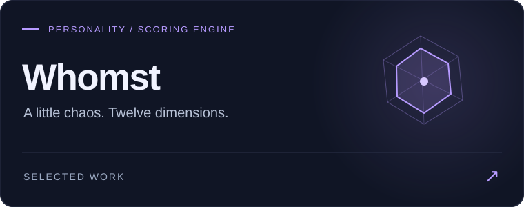
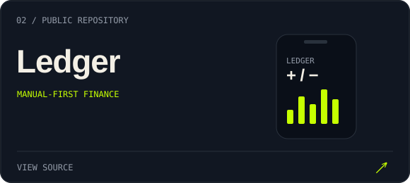
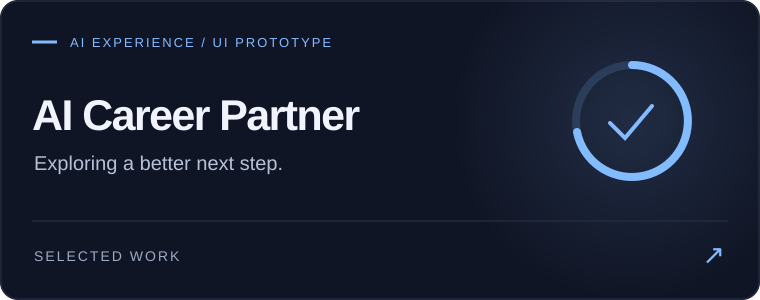
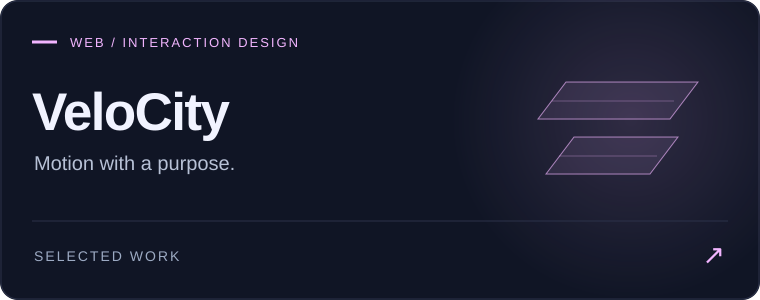

Curious enough to explore it. Hands-on enough to build it.
A little about me
I’m Faraz Haghgoo, a developer and product-minded builder based in Turin. I enjoy the whole journey: shaping an idea, designing its interactions, building the backend, and making the pieces work together.
My work spans full-stack web development, mobile apps, interactive interfaces, and AI-assisted product development. I’m drawn to software that helps people learn, work, manage their lives, or discover something unexpected.
AI is part of how I research, code, and experiment. Understanding the result, making the decisions, and checking that it works are still part of the job.
Product thinking × Engineering × Interface craft
Selected projects
|
 A character-matching quiz powered by 12 trait dimensions, server-side scoring, and shareable result pages. Engineering detail: scoring stays on the server; dynamically generated preview images make results easy to share.
|
 A personal finance app for cash spending and peer transfers, built with optimistic updates and offline-tolerant writes. Product detail: transfers are modeled separately from expenses. Moving money should not look like spending it.
|
|
 A UI prototype exploring CV feedback, job matching, career insights, and cover-letter interactions with mock data. Interface detail: custom SVG charts, animated feedback, and connected views for a complete career-workflow concept.
|
 A landing-page experience for data-verification and data-room workflows, with motion design and a working waitlist backend. Engineering detail: shared validation and types keep frontend inputs aligned with backend expectations.
|
Currently building
Alongside my public projects, I contribute to private professional work.
| Project | Status | Technologies |
|---|---|---|
| Inrebus website | Working on the new website · Private | React · TypeScript · Vite · GSAP · Lenis · Vercel |
| HMI DAO | HMI development in progress · Private | JavaScript · Vite · Three.js · Tailwind CSS · Vitest |
Project details and source code remain private.
My toolkit
| Area | Technologies & practice |
|---|---|
| Web & frontend | React · Next.js · TypeScript · JavaScript · HTML5 · CSS3 · Vite |
| Mobile | React Native · Expo · TanStack Query · optimistic UI · offline-tolerant writes |
| Backend & data | PostgreSQL · Supabase · Prisma · Redis · REST APIs · data modeling |
| Design & interaction | Tailwind CSS · GSAP · Framer Motion · Lenis · SVG · Three.js · responsive interfaces |
| Engineering | Git · GitHub · Vitest · Zod · validation · testing · modular architecture |
| Application security | Session handling · row-level security · server-side validation · rate limiting |
| Product & AI | Product prototyping · UX decisions · AI-assisted research and development · AI interface experiments |
| Deployment | Vercel · frontend build tooling |
How I approach a build
- Start with a real use case. Decide what the person needs to accomplish before choosing the architecture.
- Think across the product. Connect the interface, data model, backend, and error states.
- Give motion a job. Use it to explain a transition or acknowledge an action.
- Make boundaries explicit. Validate inputs and decide who should have access to each piece of data.
- Use AI with judgment. Explore quickly, inspect the output, and verify behavior.
- Keep experimenting. A small working version teaches more than a long list of imagined features.
Where my curiosity goes next
AI-native products · Human–computer interaction · Creative interfaces · Startup ideas
I’m interested in what happens when one person or a small team can build more ambitious software—and how that changes the way we work, learn, and create.
Have an idea worth exploring?
Let’s connect on LinkedIn ↗